A discrete random variable X is a variable that can take on a range of discrete values X1, X2,…,Xn with associated probabilities p1, p2, …pn.
The expected value E{X} is given by the expression
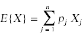
In probability theory we also study events. Suppose a system can be in one of several different states. We say that an event A occurs when the system falls into a particular state associated with that event. In probability theory we try to compute the probability of certain events happening: suppose that we have determined that an event A occurs with probability p.
We can associate a special kind of random variable with an event A. This random variable is called an indicator random variable and is written I{A} or XA. The indicator random variable has a value of 1 if A occurs, and 0 if it does not. Given this, we can compute the expected value of XA = I{A}:
E{XA} = p·1 + (1-p)·0 = p
In estimating the runtime cost of a particular algorithm, we sometimes will have to deal with uncertain events. That is, we may be looking at an algorithm, or a portion of an algorithm, that exhibits a range of different behaviors (and associated costs) depending on the nature of the data we are processing. If we can quantify the range of outcomes (and their associated costs) and attach probabilities to those outcomes, we can construct a random variable for the cost. Once we have constructed an appropriate random variable to model the cost, we can use probability theory methods to compute an expected value for the cost.
Having said this, there is often no single best way to model a cost with a random variable. What I will attempt to do below is to show some examples that demonstrate a range of strategies for associating costs with random variables.
In section 5.1 the authors present the hiring problem. In the hiring problem you are trying to hire a personal assistant. A personel agency has a set of n candidates available, and they will send you candidates one by one for you to evaluate.
Here are some further details.
The question we want to answer is "what is the expected cost of doing this interviewing and hiring process for n candidates?"
We can summarize all of this in a chunk of pseudocode.
Hire-Assistant(n)
best = 0
for i = 1 to n
interview candidate i
if candidate i is better than best
best = i
hire candidate i
For this example we want to make a slight departure from our usual method of estimating run times. In this example we don't want to estimate a run time, but rather a total cost. We compute this total cost by attaching a cost to only some of the statements in the code.
Hire-Assistant(n)
best = 0
for i = 1 to n
interview candidate i // Cost = ci
if candidate i is better than best
best = i
hire candidate i // Cost = ch
The complication here is that one of our costs is associated with a probabilistic event: the hiring event does not occur on every iteration of the loop.
The correct way to count the cost of the hiring event is to associate it with an event and to construct a random variable that models that event. We construct an event
Hi = {Candidate i is hired}
and an associated indicator random variable:
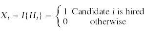
If we can compute an expected value for this random variable, we can go on to compute our total cost:
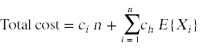
We can compute the desired expectation and finish this computation as soon as we know the probability distribution for the random variable Xi. That probability distribution hinges on a simple question: what is the probability that candidate i is better than the i-1 candidates who have come before? If we assume that all i candidates in question have a random rank and that the candidates arrive in random order, any one of the candidates has the same probability of being the best in the group. In particular, the last candidate has a probability 1/i of being the best. From this we can compute
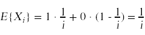
We now see that
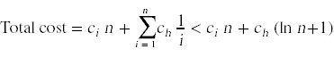
Here is a problem from the textbook. N customers leave their hats at a hat check. The person operating the hat check returns the hats back to the customers in random order when they leave. What is the expected number of customers who will receive their own hat back?
To solve this problem we introduce a family of indicator random variables
Hi = { Customer i gets their own hat back }
A simple counting argument shows that the probability pi,1 that Hi is 1 is
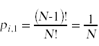
There are N! ways to arrange the hats. Of these permutations (N-1)! have an i in position i.
The expected value of Hi is therefore
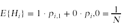
The expected number of customers who get their own hats back is
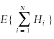
We would like to say that
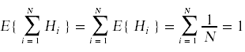
The problem with this proof is that the first equality appears to depend on the random variables involved being independent. This is not the case here, because the Hi variables are not independent random variables. For example, if I tell you that H1 is 1, that information affects the probability that H2 will be 2.
It turns out however, that the first equality is true even though the variables are not independent. Let us consider a simpler version of the equality:
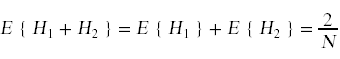
To prove this equality we consider the four possible states for the combined random variable H1 + H2 and their associated probabilities:
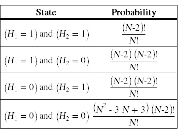
From this we can compute E{ H1 + H2 }:
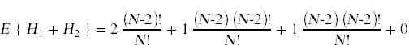
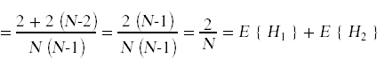
What is going on here is an example of a more general principle called the linearity of expectations. Even if the variables Hi are not independent, it is still true that
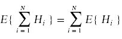
You can find many proofs of this principle online. Here is one such proof.
Consider the following variation of the hat check problem. The difference this time is that the hats have values: customer i's hat has a value of $i. When the customers get their hats back they will complain if the hat they get back has a value less than the hat they checked. Customers who complain will demand to be paid the difference in value between the hat they checked and the hat they got back. (Customers who get back a hat with greater value will just walk off with the more valuable hat.) What is the expected amount of money the hat check will have to pay out in claims?
Insertion sort is a slightly more complex algorithm which also requires a probabilistic runtime analysis.
Here is the pseudocode for insertion sort.
for j = 2 to n
key = A[j]
i = j - 1
while i > 0 and A[i] > key
A[i+1] = A[i]
i = i - 1
A[i+1] = key
A key observation to make here is that the statements in the innermost loop are probabilistic statements. Depending on the arrangement of the data, these statements may or may not get executed. As we have seen already, the appropriate way to deal with a probabilistic statement is to construct an event that says that the statement executes and then prepare a corresponding indicator random variable. In this example, the event we want to work with is
Xj,i = {The statement runs when i and j have the given values}
The problem with this event is that it is hard to compute a probability for the event. In applied probability theory, we often work around problems like this by replacing the event in question with an equivalent event whose probability is easy to compute. In this case, we can get what we want by instead considering this event:
Yj,i = {A[j] belongs in position i or below}
The probability of this event is easy to determine. If we assume that the numbers are truly randomly distributed, then A[j] has an equal probability 1/j of belonging in any one of the j possible locations between 1 and j. From this we can conclude that the probability that A[j] belongs in position i or below is i/j. Finally, it is easy to see that the statements in the inner loop will run if and only if event Yj,i takes place.
With these preliminaries out of the way, we are now ready to compute costs for insertion sort. Here is the code with costs attached. In cases where a statement is probabilistic, the cost is expressed as a combination of a cost with a random variable that says {the statement executes}.
for j = 2 to n // 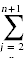 c1
key = A[j] // 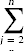 c2
i = j - 1 // 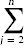 c3
while i > 0 and A[i] > key // 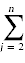 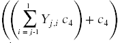
A[i+1] = A[i] // 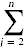 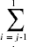Yj,i c5
i = i - 1 // 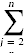 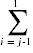Yj,i c6
A[i+1] = key // c7
The final step is to compute expected values for all of these costs. For costs that are not probabilistic, the cost is just the indicated sum. For example,
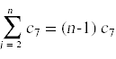
To compute the expectations where random variables are present we do the following:
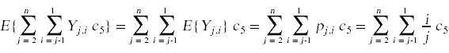
We have now cooked things down to the point where we can compute the sum:
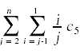
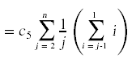
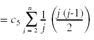
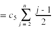
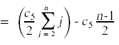
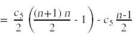
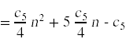